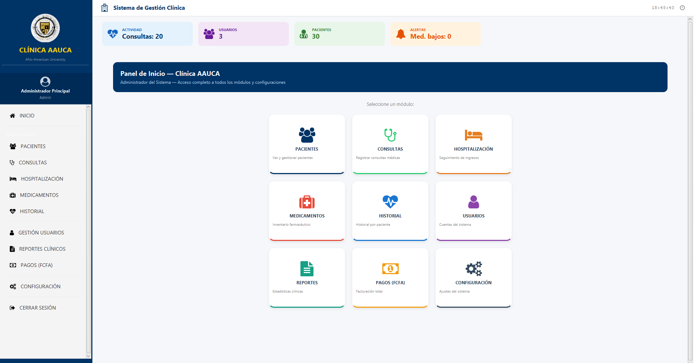

Optimice historias clínicas, triajes, recetas y el control de inventarios farmacéuticos con una interfaz táctil ultra-rápida, segura y robusta diseñada para profesionales exigentes.

Diseñado con un enfoque departamental estricto para conectar la clínica de extremo a extremo.
Clasificación rápida de pacientes en 5 escalas de prioridad médica (Manchester adaptada). Optimiza los tiempos de espera bajo situaciones críticas.
Creación ágil de expedientes clínicos, evolución médica e impresión/firma de recetas médicas digitales integradas con la base de fármacos.
Mapeo gráfico interactivo de la ocupación de camas clínicas, asignaciones de enfermería, evolución interna e inventario de pabellón.
Control estricto de medicamentos con alertas automáticas de desabastecimiento, lotes próximos a vencer y control de dispensas por receta.
Restricciones de privilegios según rol (Médicos, Enfermeros, Farmacéuticos, Administradores). Auditoría y encriptación de datos de pacientes.
Desarrollado en arquitectura nativa para Windows, consumiendo menos de 60 MB de memoria RAM con bases de datos encriptadas ultraligeras.
Tenga el sistema clínico operativo en sus estaciones de trabajo de Windows en menos de 2 minutos.
Haga clic en el botón de descarga del instalador Setup. El ejecutable se descargará directamente desde nuestros repositorios encriptados en GitHub.
Abra el instalador ClinicaAauca_Setup.exe. Al ser una aplicación nueva, si Windows SmartScreen muestra un aviso, haga clic en "Más información" y luego en "Ejecutar de todas formas".
El sistema se iniciará de forma automática. Complete los datos básicos de su clínica y cree la cuenta del Administrador Principal para comenzar a operar inmediatamente.
Descargue ahora el Sistema Clínico AAUCA de forma totalmente gratuita y revolucione la gestión médica de su institución.